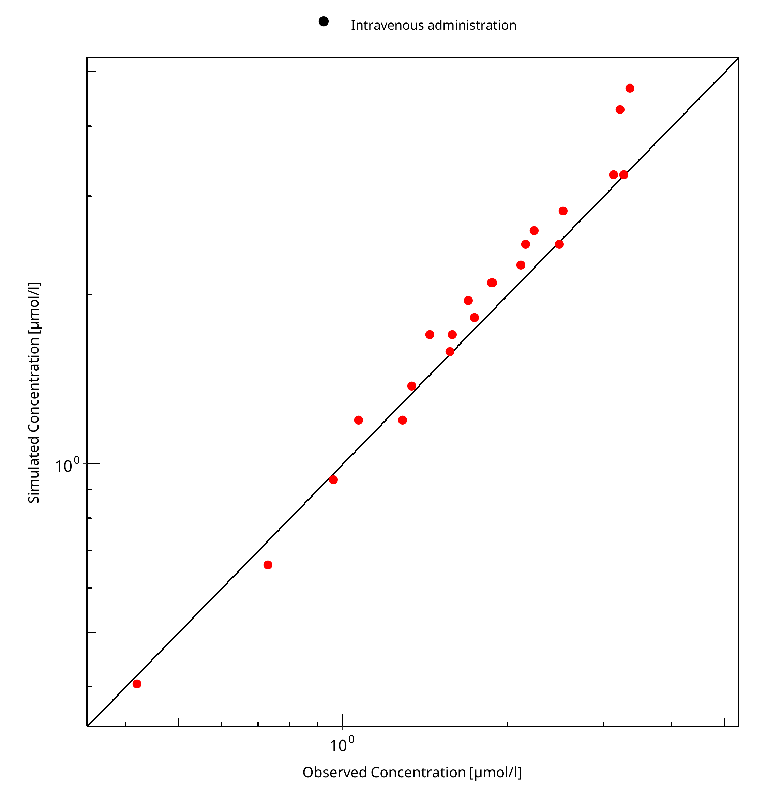
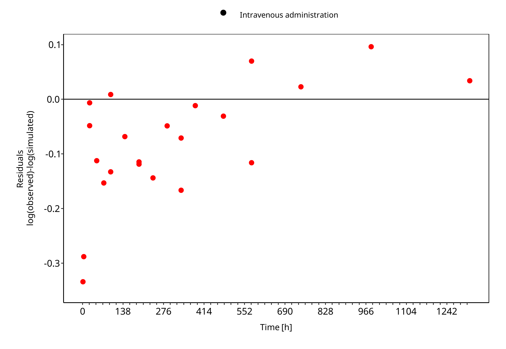
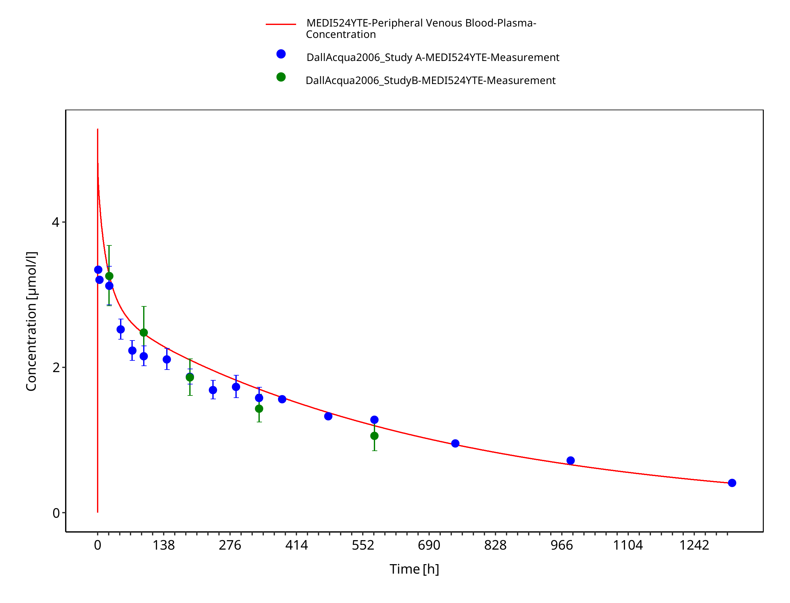
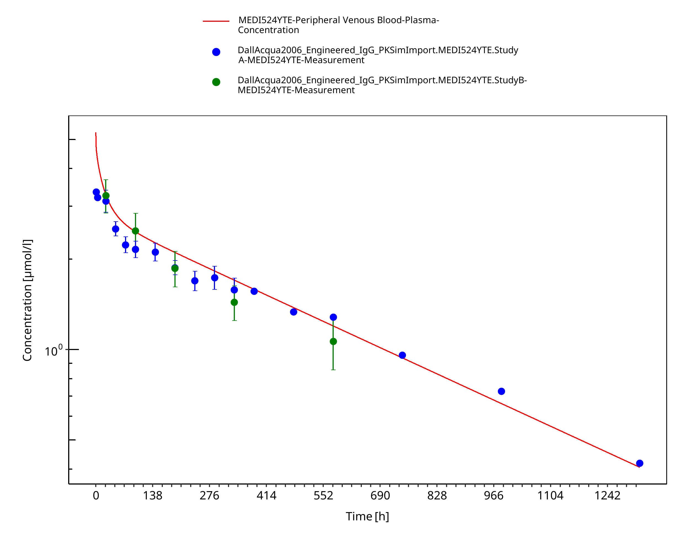

Building and evaluation of a PBPK model for antibody MEDI-524-YTE in cynomolgus monkeys¶
| Version | 1.0-OSP12.2 |
|---|---|
| based on Model Snapshot and Evaluation Plan | https://github.com/Open-Systems-Pharmacology/MEDI524YTE-Model/releases/tag/v1.0 |
| OSP Version | 12.2 |
| Qualification Framework Version | 3.5 |
This evaluation report and the corresponding PK-Sim project file are filed at:
https://github.com/Open-Systems-Pharmacology/OSP-PBPK-Model-Library/
Table of Contents¶
- 1 Introduction
- 2 Methods
- 2.1 Modeling Strategy
- 2.2 Data
- 2.3 Model Parameters and Assumptions
- 3 Results and Discussion
- 3.1 Final input parameters
- 3.2 Diagnostics Plots
- 3.3 Concentration-Time Profiles
- 4 Conclusion
- 5 References
1 Introduction¶
MEDI-524-YTE is variant of the humanized monoclonal IgG1 antibody MEDI-524 against the respiratory syncytial virus (RSV). The triple YTE mutation introduced into the Fc region led to an increased affinity to FcRn and consequently to an increased plasma half-life (Dall’Acqua2006).
The plasma concentration–time profile after intravenous application of a 30 mg/kg dose in cynomolgus monkeys (Dall’Acqua2006) were used together with pharmacokinetic (PK) data from 5 other compounds to identify unknown parameters during the development of the generic large molecule physiologically based pharmacokinetic (PBPK) model in PK-Sim (Niederalt 2018).
The herein presented evaluation report evaluates the performance of the PBPK model for MEDI-524-YTE in cynomolgus monkeys for the PK data used for the development of the generic large molecule model in PK-Sim.
The presented MEDI-524-YTE PBPK model as well as the respective evaluation plan and evaluation report are provided open-source (https://github.com/Open-Systems-Pharmacology/MEDI524YTE-Model).
2 Methods¶
2.1 Modeling Strategy¶
The development of the large molecule PBPK model in PK-Sim® has previously been described by Niederalt et al. (Niederalt 2018). In short, the model was built as an extension of the PK-Sim® model for small molecules incorporating (i) the two-pore formalism for drug extravasation from blood plasma to interstitial space, (ii) lymph flow, (iii) endosomal clearance and (iv) protection from endosomal clearance by neonatal Fc receptor (FcRn) mediated recycling.
For model development and evaluation, PK data were used from compounds with a wide range of solute radii and from different species. The PK data used for parameter estimation were from the following compounds: antibody–drug conjugate BAY 79-4620 in mice (Bayer in house data), antibody 7E3 in wild-type and FcRn knockout mice (Garg 2007, Garg2009), domain antibody dAb2 in mice (Sepp 2015), antibodies MEDI-524 and MEDI-524-YTE in monkeys (Dall'Acqua 2006), and antibody CDA1 in humans (Taylor 2008). The PK data used for model evaluation were from inulin in rats (Tsuji1983) and tefibazumab in humans (Reilly 2005).
The PBPK model including the estimated physiological parameters as described by Niederalt et al. (Niederalt 2018) is available in the Open Systems Pharmacology Suite from version 7.1 onwards.
This evaluation report focuses on the PBPK model for the antibody antibodies MEDI-524-YTE.
Details about input data (physicochemical, in vitro and PK) can be found in Section 2.2.
Details about the structural model and its parameters can be found in Section 2.3.
2.2 Data¶
2.2.1 In vitro / physico-chemical Data ¶
A literature search was performed to collect available information on physicochemical properties of MEDI-524-YTE. The obtained information from literature is summarized in the table below.
| Parameter | Unit | Value | Source | Description |
|---|---|---|---|---|
| MW | g/mol | 150000 | Lobo 2004 | Molecular weight |
| r | nm | 5.34 | Taylor 1984 | Hydrodynamic solute radius |
| Kd (FcRn) | µM | 0.134 | Dall'Acqua 2006 | Dissociation constant for binding to cynomolgus monkey FcRn for the Fc variant MEDI-524-YTE (pH 6) |
2.2.2 PK Data ¶
Published PK data on MEDI-524-YTE in cynomolgus monkeys were used.
| Publication | Description |
|---|---|
| Dall'Acqua 2006 | The plasma concentration–time profiles after single i.v. infusion of 30 mg/kg MEDI-524-YTE in in cynomolgus monkeys were used. |
2.3 Model Parameters and Assumptions¶
2.3.1 Absorption ¶
There is no absorption process since MEDI-524-YTE was administered intravenously.
2.3.2 Distribution ¶
The standard lymph and fluid recirculation flow rates and the standard vascular properties of the different tissues (hydraulic conductivity, pore radii, fraction of flow via large pores) from PK-Sim were used. MEDI-524-YTE, among other compounds, has been used to identify these lymph and fluid recirculation flow rates used in PK-Sim (Niederalt 2018).
2.3.3 Metabolism and Elimination ¶
The FcRn mediated clearance present in the standard PK-Sim model was used as only clearance process. The standard physiological parameters related to FcRn mediated clearance were used (rate constants for endosomal uptake and recycling, association rate constant for FcRn binding and concentration of FcRn in the endosomal space). MEDI-524-YTE, among other compounds, has been used to identify these parameters using literature values for the drug affinities to FcRn in the endosomal space (Niederalt 2018).
2.3.4 Automated Parameter Identification ¶
No drug specific parameters were fitted. MEDI-524-YTE, among other compounds, has been used to develop the model for proteins and large molecules in PK-Sim (Niederalt 2018).
3 Results and Discussion¶
The PBPK model for MEDI-524-YTE was evaluated with PK data in cynomolgus monkeys.
These PK data have been used together with PK data from 5 other compounds to simultaneously identify parameters during the development of the generic model for proteins and large molecules in PK-Sim (Niederalt 2018).
The next sections show:
- the final model parameters for the building blocks: Section 3.1.
- the overall goodness of fit: Section 3.2.
- simulated vs. observed concentration-time profiles for the clinical studies used for model building and for model verification: Section 3.3.
3.1 Final input parameters¶
The compound parameter values of the final PBPK model are illustrated below.
Compound: MEDI524YTE¶
Parameters¶
| Name | Value | Value Origin | Alternative | Default |
|---|---|---|---|---|
| Solubility at reference pH | 9999 mg/l | Other-/Dummy value not used in the simulation | Measurement | True |
| Reference pH | 7 | Other-/Dummy value not used in the simulation | Measurement | True |
| Lipophilicity | -5 Log Units | Other-/Dummy value not used in the simulation | Measurement | True |
| Fraction unbound (plasma, reference value) | 1 | Other-Assumption | Measurement | True |
| Is small molecule | No | |||
| Molecular weight | 150000 g/mol | Publication-Lobo2004 | ||
| Plasma protein binding partner | Unknown | |||
| Radius (solute) | 0.00534 µm | Publication-Taylor1984 | ||
| Kd (FcRn) in endosomal space | 0.134 µmol/l | Publication-Dall'Acqua2006 |
Calculation methods¶
| Name | Value |
|---|---|
| Partition coefficients | PK-Sim Standard |
| Cellular permeabilities | PK-Sim Standard |
Processes¶
3.2 Diagnostics Plots¶
Below you find the goodness-of-fit visual diagnostic plots for the PBPK model performance of all data used presented in Section 2.2.2.
The first plot shows observed versus simulated plasma concentration, the second weighted residuals versus time.
Table 3-1: GMFE for Goodness of fit plot for concentration in plasma
| Group | GMFE |
|---|---|
| Intravenous administration | 1.10 |

Figure 3-1: Goodness of fit plot for concentration in plasma

Figure 3-2: Goodness of fit plot for concentration in plasma
3.3 Concentration-Time Profiles¶
Simulated versus observed concentration-time profiles of all data listed in Section 2.2.2 are presented below.

Figure 3-3: Plasma concentration (linear scale)

Figure 3-4: Plasma concentration (log scale)
4 Conclusion¶
The herein presented PBPK model adequately describes the pharmacokinetics in monkeys of MEDI-524-YTE, a variant of MEDI-524 with increased plasma half life. The PK data had been used during the development of the generic large molecule PBPK model in PK-Sim (Niederalt 2018) together with PK data from 5 other compounds (7E3, BAY 79-4620, CDA1, dAb2 & MEDI-524).
5 References¶
Dall'Acqua 2006 Dall’Acqua WF, Kiener PA, Wu H. Properties of human IgG1s engineered for enhanced binding to the neonatal Fc receptor (FcRn). J Biol Chem. 2006 Aug; 281(33):23514-23524. doi: 10.1074/jbc.M604292200.
Garg 2007 Garg A, Balthasar JP. Physiologically-based pharmacokinetic (PBPK) model to predict IgG tissue kinetics in wild-type and FcRn-knockout mice. J Pharmacokinet Pharmacodyn. 2007 Jul; 34(5):687-709. doi: 10.1007/s10928-007-9065-1.
Garg 2009 Garg A, Balthasar J. Investigation of the influence of FcRn on the distribution of IgG to the brain. AAPS J. 2009 July; 11(3):553-557. doi: 10.1208/s12248-009-9129-9.
Lobo 2004 Lobo ED, Hansen R J, Balthasar JP. Antibody pharmacokinetics and pharmacodynamics. J Pharm Sci. 2004 Nov;93(11):2645-2668. doi: 10.1002/jps.20178.
Niederalt 2018 Niederalt C, Kuepfer L, Solodenko J, Eissing T, Siegmund HU, Block M, Willmann S, Lippert J. A generic whole body physiologically based pharmacokinetic model for therapeutic proteins in PK-Sim. J Pharmacokinet Pharmacodyn. 2018 Apr;45(2):235-257. doi: 10.1007/s10928-017-9559-4.
Reilly 2005 Reilley S, Wenzel E, Reynolds L, Bennett B, Patti JM, Hetherington S. Open-label, dose escalation study of the safety and pharmacokinetic profile of tefibazumab in healthy volunteers. Antimicrob Agents Chemother. 2005 Mar;49(3):959–962. doi: 10.1128/AAC.49.3.959-962.2005.
Sepp 2015 Sepp A, Berges A, Sanderson A, Meno-Tetang G. Development of a physiologically based pharmacokinetic model for a domain antibody in mice using the two-pore theory. J Pharmacokinet Pharmacodyn. 2015 Jan;42(2):97-109. doi: 10.1007/s10928-014-9402-0.
Taylor 1984 Taylor AE, Granger DN. Exchange of macromolecules across the microcirculation. Handbook of Physiology - Cardiovascular System. Microcirculation (Eds. Renkin EM and Michel CC. Bethesda, MD, American Physiological Society). 1984; Vol. 4(Pt 2):467–520.
Taylor 2008 Taylor CP, Tummala S, Molrine D, Davidson L, Farrell RJ, Lembo A, Hibberd PL, Lowy I, Kelly CP. Open-label, dose escalation phase I study in healthy volunteers to evaluate the safety and pharmacokinetics of a human monoclonal antibody to Clostridium difficile toxin A. Vaccine. 2008 Jun;26(27-28):3404–3409. doi: 10.1016/j.vaccine.2008.04.042.
Tsuji 1983 Tsuji A, Yoshikawa T, Nishide K, Minami H, Kimura M, Nakashima E, Terasaki T, Miyamoto E, Nightingale CH, Yamana T. Physiologically based pharmacokinetic model for beta-lactam antibiotics I: tissue distribution and elimination in rats. J Pharm Sci. 1983 Nov;72(11):1239-1252. doi: 10.1002/jps.2600721103.